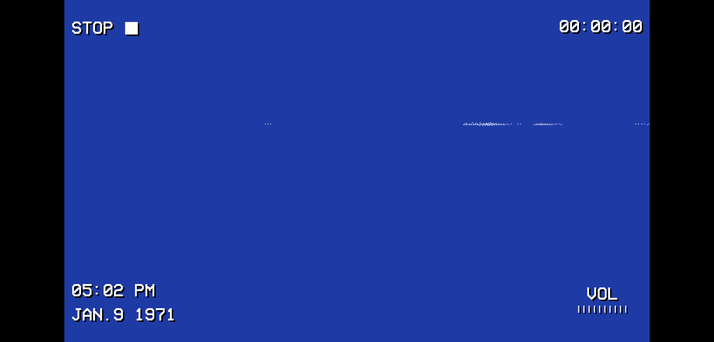

PROJECTS_10
projects.pls
Please check out some of my projects! If you see an image, click on it and you'll be brought to the project page.
ART_PROJECTS!.clap
refurbished_immortality
The 1970s, a time when new technology was exploding onto the scenes. We just landed man on the moon, and have so much to tinker with.
Concepts of old have been harboring around the human mind for a long time. The most prevelant of which, however, being the concept of immortality. The idea of living forever, or at least for a very long time, has been a topic of fascination for centuries.
This experience asks the question: if one could preserve human organs within this newfound technology, would they be able to achieve immortality?
This project was created with base JavaScript, HTML, and CSS, and was inspired by the aesthetics of the 1970s. You play as as an unknown viewer who has found a television from a dumpster. They say it was from the recent fire that claimed a laboratory in town, one whose experiments you have only heard rumors about.
It also came with a set of VHS tapes, peeking your interest, as you, too, have not seen technology similar to this forever. The TV gives a warm glow, and you must venture deep to figure out what these VHS tapes really mean, and the secrets from within...
